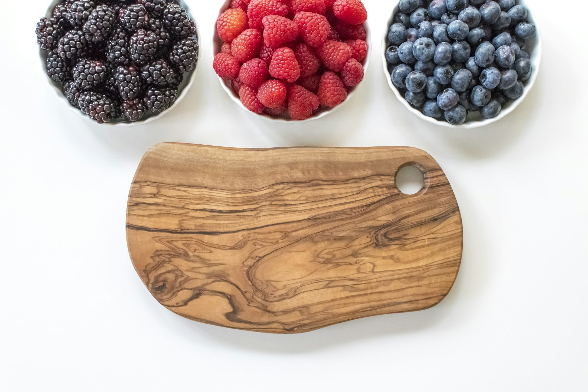

Exploring Global Snack Culture: A Journey Through Favorite Treats
This article delves into the fascinating world of snacks across various cultures, highlighting beloved treats and their significance in social settings.
The Role of Snacks in Daily Life
Snacks play a vital role in our daily routines, offering quick nourishment, satisfying cravings, and enhancing social interactions. They can be enjoyed on the go, during work breaks, or as part of celebrations and gatherings. The diversity of snacks showcases the creativity and ingenuity of different cultures, often reflecting local ingredients and culinary techniques.
As we explore snacks from around the world, it becomes evident that they not only provide sustenance but also foster connections among people. Sharing snacks can bring friends and family together, creating moments of joy and camaraderie.
American Snacks: A Variety of Flavors
In the United States, the snack culture is as diverse as its population. From salty to sweet, American snacks range widely, with options like potato chips, pretzels, and popcorn being popular choices for savory cravings. On the sweeter side, cookies, brownies, and candy bars are perennial favorites.
The invention of the chocolate chip cookie in the 1930s exemplifies American ingenuity in snack creation. This classic treat has become a symbol of comfort and nostalgia, often associated with homemade warmth. Additionally, regional snacks, such as Chicago-style popcorn and New Orleans beignets, reflect the local culinary influences that shape American snack culture.
Mexican Snacks: A Fiesta of Flavors
Mexican snacks are known for their bold flavors and vibrant colors. Street food vendors often serve delicious bites like elote (grilled corn) and churros, showcasing the richness of Mexican cuisine. Tortilla chips and salsa are also popular choices, providing a perfect balance of crunch and zest.
Churros, in particular, are a sweet delight enjoyed by many, often served with hot chocolate for dipping. Their crispy exterior and soft interior create a satisfying texture that makes them irresistible. Snacks in Mexico often accompany social gatherings, reflecting the culture's emphasis on sharing food and celebrating community.
Asian Snacks: A Fusion of Textures
Asian snack culture is incredibly diverse, with each country offering its unique treats. In Japan, for instance, mochi is a beloved snack made from glutinous rice, often filled with sweet red bean paste or ice cream. The chewy texture and delicate flavors make mochi a favorite among many.
In China, snack options include crispy spring rolls and savory dumplings, which are often enjoyed with dipping sauces. Meanwhile, Korea is famous for its spicy rice cakes, known as tteokbokki, which provide a delightful kick of flavor. Asian snacks frequently emphasize balance and harmony in flavors, showcasing the region's culinary philosophies.
Middle Eastern Snacks: A Celebration of Flavor
Middle Eastern snacks are a delicious blend of spices, herbs, and fresh ingredients. Hummus, a creamy dip made from chickpeas, is often served with pita bread and is a staple at gatherings. Its rich flavor and smooth texture make it a versatile snack that pairs well with various dishes.
Another popular treat is baklava, a sweet pastry made of layers of phyllo dough, filled with nuts and soaked in syrup. This indulgent dessert is a favorite at celebrations and gatherings, symbolizing generosity and hospitality in Middle Eastern culture. Snacks in this region often reflect the warm and welcoming spirit of the people, making them a cherished part of social interactions.
European Snacks: Traditional Treats
European countries boast a rich variety of snacks, often tied to their culinary traditions. In Italy, for example, grissini (thin breadsticks) are a popular appetizer and snack, often served with cured meats and cheeses. These crispy treats embody the Italian appreciation for quality ingredients and simple preparation.
In Spain, tapas offer a unique snacking experience, with small plates of food that encourage sharing and socializing. From patatas bravas to jamón ibérico, tapas provide a delightful way to sample various flavors in a relaxed setting. These communal snacks highlight the importance of food in fostering connections among friends and family.
Snacks in the Digital Age
With the rise of social media and digital communication, snack culture has evolved. Today, food photography has become a popular trend, with many sharing their snack experiences online. This trend has led to the emergence of unique snack recipes and fusion creations that blend different cultural influences.
Moreover, the availability of international snacks has increased, allowing people to explore flavors from around the globe without leaving their homes. Subscription boxes and online shops offer curated selections of snacks, bringing global treats to eager taste buds. This accessibility fosters a greater appreciation for diverse culinary traditions, enriching our understanding of snack culture.
Conclusion: The Joy of Snacking
Snacks are more than just quick bites; they represent a rich tapestry of culture, tradition, and creativity. From savory to sweet, snacks provide an opportunity to explore the world through food, highlighting the flavors and customs of different regions. Whether enjoyed alone or shared with others, snacks have a remarkable ability to bring joy and connection to our lives.
As we celebrate the diversity of global snack culture, we are reminded of the importance of food in fostering relationships and creating memorable experiences. The next time you reach for a snack, take a moment to appreciate the stories and traditions that have shaped it, and savor the joy it brings.